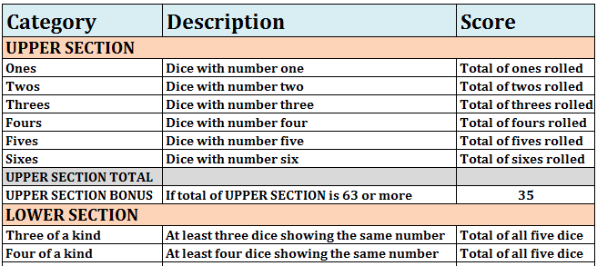

Scoring Rules
{kind=link}

Each box on the scoreboard is calculated in a different way. You also get a bonus of 35 points for having a sum greater than 63 in the Upper Boxes.
Click Roll to start new game.
Select any dice you wish to hold and click Roll again to reroll. You get a maximum of three rolls.
Click on any of the player scoreboard boxes after any roll to enter your score. The boxes show the score you'll get.
After you're done with your turn, it's the computer's turn. After this, you will alternate turns until all scoreboard boxes are filled.
Each box on the scoreboard is calculated in a different way. You also get a bonus of 35 points for having a sum greater than 63 in the Upper Boxes.
It's more important to focus on the Upper Boxes than the Lower Boxes in order to collect the 35 point bonus. Saving the Chance box until the late game can also pay off.
The optimal Yahtzee strategy leads to an average expected score of 254.59. This page contains advanced strategies for reaching the optimal strategy, courtesy Cornell University.
Each turn begins with a roll of the five dice. Then, you have two more rolls during which you can decide which dice to keep and which to reroll. Each turn ends with you selecting a box on the scoreboard. The score you'd get for picking the box is shown on the scoreboard. The entire game lasts 13 turns, until the entire scoreboard is complete.
Each category on the scoreboard is scored in a different way:
Ones through Sixes boxes are scored based on the number of dice you have that match the number on the category. For example, if you roll a 2-2-3-3-3, you would score a 0 in the Ones category, a 4 in the Twos category, a 9 in the Threes category, or a 0 in any of the Fours, Fives, or Sixes categories.
Sum is calculated from the six upper categories at the end of the game. If the Sum is greater than 63, you get an additional 35 points in the Bonus category.
Bonus is filled with 35 if the sum is more than 63; otherwise 0.
Three of a Kind: three dice of the same kind. Score is the sum of all the dice.
Four of a Kind: four dice of the same kind. Score is the sum of all the dice.
Full House: three dice of one kind and two dice of another kind. Scores 25 points.
Little Straight: dice that read 1-2-3-4, 2-3-4-5, or 3-4-5-6, in any order. Scores 30 points.
Big Straight: dice that read 1-2-3-4-5 or 2-3-4-5-6, in any order. Scores 40 points.
Chance: can be picked at any time. Score is the sum of all the dice.
Yahtzee: five dice of the same kind. Scores 50 points.
If you've already selected the Yahtzee box when you roll another Yahtzee, special rules apply.
If you have a 50 or more in the Yahtzee box, you gain a bonus 100 points in that category. If the number on your five dice is left unfilled in the Upper Section, you must fill that in. However, if you've already filled that category, you can use the Yahtzee as a Joker in the Lower Section, filling in any box you wish.
If you have a 0 in the Yahtzee box, you don't get a bonus, but you can use the Yahtzee as a Joker and fill in any open Lower Section box. Alternately, you could fill in the Upper Section box with the appropriate number.